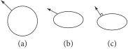

3.10 应用变换（Applying Transformations）
我们现在可以定义执行适当矩阵乘法来变换点和向量的例程。我们将重载函数应用运算符来描述这些变换；这使我们能够像下面这样编写代码：
Point3f p = ...;
Transform T = ...;
Point3f pNew = T(p);
3.10.1 点（Points）
点变换例程接受一个点 \( (x,y,z) \) 并隐式表示为齐次列向量 \( [x\ y\ z\ 1]^T \) 。然后，通过用变换矩阵左乘（premultiply）这个向量来变换该点。最后，将结果除以 \( w \) 来转换回非齐次点表示。为了提高效率，当权重 \( w=1 \) 时，该方法跳过了对齐次权重 \( w \) 的除法，这对于将在 pbrt 中使用的大多数变换是常见的——只有在第 5 章中定义的投影变换才需要此除法。
/** Transform 内联方法 */
template <typename T>
Point3<T> Transform::operator()(Point3<T> p) const {
T xp = m[0][0] * p.x + m[0][1] * p.y + m[0][2] * p.z + m[0][3];
T yp = m[1][0] * p.x + m[1][1] * p.y + m[1][2] * p.z + m[1][3];
T zp = m[2][0] * p.x + m[2][1] * p.y + m[2][2] * p.z + m[2][3];
T wp = m[3][0] * p.x + m[3][1] * p.y + m[3][2] * p.z + m[3][3];
if (wp == 1)
return Point3<T>(xp, yp, zp);
else
return Point3<T>(xp, yp, zp) / wp;
}
Transform 类还为其变换的每种类型提供了相应的 ApplyInverse() 方法。针对 Point3 的方法对给定点应用其逆变换。调用此方法比先调用 Transform::Inverse() 然后再调用其 operator() 更简洁且通常更高效。
/** Transform 公有方法 */
template <typename T>
Point3<T> ApplyInverse(Point3<T> p) const;
所有后续可以变换的类型也都有 ApplyInverse() 方法，尽管我们不会在书中包含它们。
3.10.2 向量（Vectors）
向量的变换可以以类似的方式计算。然而，矩阵与列向量的乘法被简化，因为隐式齐次 \( w \) 坐标为零。
/** Transform 内联方法 */
template <typename T>
Vector3<T> Transform::operator()(Vector3<T> v) const {
return Vector3<T>(m[0][0] * v.x + m[0][1] * v.y + m[0][2] * v.z,
m[1][0] * v.x + m[1][1] * v.y + m[1][2] * v.z,
m[2][0] * v.x + m[2][1] * v.y + m[2][2] * v.z);
}
3.10.3 法线（Normals）
图 3.29：变换表面法线。(a) 原始的圆，法线在某一点由箭头表示。(b) 当将圆在 \( y \) 方向上缩放为一半高度时，简单地将法线视为一个方向并以相同方式缩放，会导致法线不再垂直于表面。(c) 正确变换的法线。
法线的变换方式与向量不同，如图 3.29 所示。尽管表面的切向量以简单的方式变换，法线却需要特别处理。由于法向量 \( \mathbf{n} \) 和表面上的任何切向量 \( \mathbf{t} \) 在构造上是正交的，我们知道
\[
\mathbf{n}\cdot\mathbf{t} = \mathbf{n}^T\mathbf{t} = 0
\]
当我们通过某个矩阵 \( \mathbf{M} \) 变换表面上的一个点时，变换后点的切向量 \( \mathbf{t}' \) 为 \( \mathbf{M}\mathbf{t} \) 。变换后的法向量 \( \mathbf{n}' \) 应该等于通过某个 \( 4\times4 \) 矩阵 \( \mathbf{S} \) 变换后的 \( \mathbf{S}\mathbf{n} \) 。为了保持正交性要求，我们必须有
\[
\begin{align}
0 &= (\mathbf{n}')^T\mathbf{t}' \\
&= (\mathbf{S}\mathbf{n})^T\mathbf{M}\mathbf{t} \\
&= (\mathbf{n})^T\mathbf{S}^T\mathbf{M}\mathbf{t} \\
\end{align}
\]
该条件在 \( \mathbf{S}^T\mathbf{M} = \mathbf{I} \)，即单位矩阵的情况下成立。因此，\( \mathbf{S}^T = \mathbf{M}^{-1} \)，所以 \( \mathbf{S} = (\mathbf{M}^{-1})^T \)，我们看到法线必须通过变换矩阵的逆的转置进行变换。这个细节是 Transform 包含其逆的原因之一。
请注意，这种方法在变换法线时并不显式计算逆矩阵的转置。它只是以不同的顺序索引逆矩阵（相比于变换 Vector3f 的代码）。
/** Transform 内联方法 */
template <typename T>
Normal3<T> Transform::operator()(Normal3<T> n) const {
T x = n.x, y = n.y, z = n.z;
return Normal3<T>(mInv[0][0] * x + mInv[1][0] * y + mInv[2][0] * z,
mInv[0][1] * x + mInv[1][1] * y + mInv[2][1] * z,
mInv[0][2] * x + mInv[1][2] * y + mInv[2][2] * z);
}
3.10.4 光线（Rays）
变换光线在概念上是非常简单的：只需变换组成它的起点和方向，并复制其他数据成员。（ pbrt 也提供了一个类似的方法来变换 RayDifferential 。）
在 pbrt 中用于管理浮点数舍入误差的方法引入了一些细节，需要对变换后的光线起点进行小幅调整。<<将光线起点偏移到误差界限的边缘并计算 tMax>>片段处理了这些细节；该片段在第 6.8.6 节中定义，其中讨论了舍入误差及 pbrt 处理该误差的机制。
/** Transform 内联方法 */
Ray Transform::operator()(const Ray &r, Float *tMax) const {
Point3fi o = (*this)(Point3fi(r.o));
Vector3f d = (*this)(r.d);
/** 将光线起点偏移到误差界限的边缘并计算 tMax */
if (Float lengthSquared = LengthSquared(d); lengthSquared > 0) {
Float dt = Dot(Abs(d), o.Error()) / lengthSquared;
o += d * dt;
if (tMax)
*tMax -= dt;
}
return Ray(Point3f(o), d, r.time, r.medium);
}
3.10.5 边界框（Bounding Boxes）
变换轴对齐包围盒（AABB）的最简单方法是变换其所有八个角顶点，然后计算一个包含这些点的新的边界框。下面展示了这种方法的实现；本章有一个课后练习要求你实现一种更高效地进行此计算的技术。
/** Transform 方法定义 */
Bounds3f Transform::operator()(const Bounds3f &b) const {
Bounds3f bt;
for (int i = 0; i < 8; ++i)
bt = Union(bt, (*this)(b.Corner(i)));
return bt;
}
3.10.6 变换的复合（Composition of Transformations）
在定义了如何构建表示单个变换类型的矩阵之后，我们现在可以考虑由一系列单个变换所产生的总变换。我们终于将看到用矩阵表示变换的真正价值。
考虑一系列变换 \( \mathbf{A}\mathbf{B}\mathbf{C} \) 。我们希望计算一个新的变换 \( \mathbf{T} \) ，使得应用 \( \mathbf{T} \) 的结果与反向应用 \( \mathbf{A} \)、 \( \mathbf{B} \) 和 \( \mathbf{C} \) 的结果相同；即 \( \mathbf{A}(\mathbf{B}(\mathbf{C}(\text{p}))) = \mathbf{T}(\text{p}) \) 。这样的变换 \( \mathbf{T} \) 可以通过将变换 \( \mathbf{A} \)、 \( \mathbf{B} \) 和 \( \mathbf{C} \) 的矩阵相乘来计算。在 pbrt 中，我们可以写：
Transform T = A * B * C;
然后我们可以像往常一样将 T 应用于 Point3f 的 p ， Point3f pp = T(p) ，而不是依次应用每个变换： Point3f pp = A(B(C(p))) 。
我们在 Transform 类中重载 C++ * 运算符，以计算用另一个变换 t2 后乘（postmultiply） 该变换所得到的新变换。在矩阵乘法中，结果矩阵的地 \( (i,j) \) 个元素是第一个矩阵的第 \( i \) 行与第二个矩阵的第 \( j \) 列的内积。
结果变换的逆等于 t2.mInv * mInv 的乘积。这是矩阵恒等式的结果
\[
(\mathbf{AB})^{-1} = \mathbf{B}^{-1}\mathbf{A}^{-1}
\]
/** Transform 方法定义 */
<<Transform Method Definitions>>+=
Transform Transform::operator*(const Transform &t2) const {
return Transform(m * t2.m, t2.mInv * mInv);
}
3.10.7 变换与坐标系手性（Transformations and Coordinate System Handedness）
某些类型的变换会将左手坐标系变成右手坐标系，反之亦然。一些例程需要知道源坐标系的手性是否与目标坐标系不同。特别是，想要确保表面法线始终指向表面“外部”的例程，在手性发生变化时，可能需要在变换后翻转法线的方向。
幸运的是，判断变换是否改变了手性是很简单的：只有当变换的左上角 \( 3\times3 \) 子矩阵的行列式为负时，才会发生这种情况。
/** Transform 方法定义 */
<<Transform Method Definitions>>+=
bool Transform::SwapsHandedness() const {
SquareMatrix<3> s(m[0][0], m[0][1], m[0][2],
m[1][0], m[1][1], m[1][2],
m[2][0], m[2][1], m[2][2]);
return Determinant(s) < 0;
}
3.10.8 向量框架（Vector Frames）
有时定义一个旋转使得坐标系统中的三个规范正交向量（Orthonormal vectors）与 \( x \)、 \( y \) 和 \( z \) 轴对齐是有用的。将这种变换应用于该坐标系中的方向向量可以简化后续计算。例如，在 pbrt 中，BSDF 评估是在一个表面法线与 \( z \) 轴对齐的坐标系中进行的。除此之外，这使得可以高效地使用诸如第 3.8.3 节中介绍的 CosTheta() 函数来计算三角函数。
Frame 类高效地表示并执行此类变换，避免了 Transform 类的完全通用性（因此也避免了复杂性）。它只需要存储一个 \( 3\times 3 \) 矩阵，存储逆矩阵是没有必要的，因为在规范正交基向量（orthonormal basis vectors）的情况下，逆矩阵仅仅是该矩阵的转置。
/** Frame 定义 */
class Frame {
public:
/** Frame 公有方法 */
Frame() : x(1, 0, 0), y(0, 1, 0), z(0, 0, 1) {}
Frame(Vector3f x, Vector3f y, Vector3f z);
static Frame FromXZ(Vector3f x, Vector3f z) {
return Frame(x, Cross(z, x), z);
}
static Frame FromXY(Vector3f x, Vector3f y) {
return Frame(x, y, Cross(x, y));
}
static Frame FromZ(Vector3f z) {
Vector3f x, y;
CoordinateSystem(z, &x, &y);
return Frame(x, y, z);
}
static Frame FromX(Vector3f x) {
Vector3f y, z;
CoordinateSystem(x, &y, &z);
return Frame(x, y, z);
}
static Frame FromY(Vector3f y) {
Vector3f x, z;
CoordinateSystem(y, &z, &x);
return Frame(x, y, z);
}
static Frame FromX(Normal3f x) {
Vector3f y, z;
CoordinateSystem(x, &y, &z);
return Frame(Vector3f(x), y, z);
}
static Frame FromY(Normal3f y) {
Vector3f x, z;
CoordinateSystem(y, &z, &x);
return Frame(x, Vector3f(y), z);
}
PBRT_CPU_GPU
static Frame FromZ(Normal3f z) { return FromZ(Vector3f(z)); }
Vector3f ToLocal(Vector3f v) const {
return Vector3f(Dot(v, x), Dot(v, y), Dot(v, z));
}
Normal3f ToLocal(Normal3f n) const {
return Normal3f(Dot(n, x), Dot(n, y), Dot(n, z));
}
Vector3f FromLocal(Vector3f v) const {
return v.x * x + v.y * y + v.z * z;
}
Normal3f FromLocal(Normal3f n) const {
return Normal3f(n.x * x + n.y * y + n.z * z);
}
std::string ToString() const {
return StringPrintf("[ Frame x: %s y: %s z: %s ]", x, y, z);
}
/** Frame 公有成员 */
Vector3f x, y, z;
};
给定三个规范正交向量 \( \mathbf{x} \)、 \( \mathbf{y} \) 和 \( \mathbf{z} \) ，将向量变换到其空间的矩阵 \( \mathbf{F} \) 是
\[ \mathbf{F} = \left( \begin{matrix} {\mathbf{x}_x} & {\mathbf{x}_y} & {\mathbf{x}_z} \\ {\mathbf{y}_x} & {\mathbf{y}_y} & {\mathbf{y}_z} \\ {\mathbf{z}_x} & {\mathbf{z}_y} & {\mathbf{z}_z} \\ \end{matrix} \right) = \left( \begin{matrix} {x} \\ {y} \\ {z} \end{matrix} \right) \]
Frame 使用三个 Vector3f 来存储此矩阵。
/** Frame 公有成员 */
Vector3f x, y, z;
三个基向量可以被明确指定；在调试构建中，构造函数中的 DCHECK() 确保提供的向量是规范正交的（orthonormal）。
/** Frame 公有方法 */
Frame() : x(1, 0, 0), y(0, 1, 0), z(0, 0, 1) {}
Frame(Vector3f x, Vector3f y, Vector3f z);
Frame 还提供了便利的方法，可以仅使用两个基向量来构造一个框架，通过叉积计算第三个向量。
/** Frame 公有方法 */
static Frame FromXZ(Vector3f x, Vector3f z) {
return Frame(x, Cross(z, x), z);
}
static Frame FromXY(Vector3f x, Vector3f y) {
return Frame(x, y, Cross(x, y));
}
也可以仅提供 \( z \) 轴向量，在这种情况下，其他向量被任意设置。
/** Frame 公有方法 */
static Frame FromZ(Vector3f z) {
Vector3f x, y;
CoordinateSystem(z, &x, &y);
return Frame(x, y, z);
}
其他多种未在此列出的函数允许使用法向量指定一个框架，和仅通过 \( x \) 或 \( y \) 基向量来指定它。
将向量变换至框架的坐标空间是通过 \( \mathbf{F} \) 矩阵完成的。由于 Vector3f 被用来存储其行，因此矩阵-向量的乘积可以表示为三个点积。
/** Frame 公有方法 */
Vector3f ToLocal(Vector3f v) const {
return Vector3f(Dot(v, x), Dot(v, y), Dot(v, z));
}
还提供了一种用于法向量的 ToLocal() 方法。在这种情况下，我们不需要计算 \( \mathbf{F} \) 的逆转置来变换法线（回顾第 3.10.3 节关于变换法线的讨论）。因为 \( \mathbf{F} \) 是一个规范正交矩阵（其行和列相互正交且都是单位长度），它的逆等于它的转置，所以它已经是它自己的逆转置。
/** Frame 公有方法 */
Normal3f ToLocal(Normal3f n) const {
return Normal3f(Dot(n, x), Dot(n, y), Dot(n, z));
}
将向量从框架的局部空间变换出来的方法是转置 \( \mathbf{F} \) 以找到其逆，然后再与向量相乘。在这种情况下，计算的结果可以表示为矩阵列的三个缩放版本的总和。与之前一样，表面法线作为常规向量进行变换。（该方法不在此处包含。）
/** Frame 公有方法 */
Vector3f FromLocal(Vector3f v) const {
return v.x * x + v.y * y + v.z * z;
}
为了方便，Transform 还有一个接受 Frame 的构造函数。其简单的实现不在此处包含。
/** Transform 公有方法 */
explicit Transform(const Frame &frame);